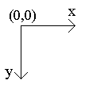
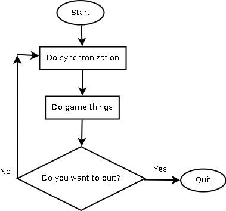

Simple windows game framework:
Programmer reference
Table of contents
Part 1. Welcome to
Simple windows game framework
Chapter 1.
Introduction
Introduction
Hello from Russia. My name is Popov Evgeniy Alekseyevich. I am the
individual programmer. I enjoy creating a software. I also like old–school
video games. Do you want to develop a video games for Microsoft Windows?
You need a good multimedia library for do it. I made my own library. I
hope that my C++ library will be useful for many programmers.
Features
Let me show the library features. Let’s go.
- Open source code.
- Easy to use object–orientated design.
- Very fast.
- Minimum external dependencies: Only DirectX, OPENGL and standard
Windows API libraries.
- Don’t need to link main program with library binary file. The
library is just source code files with all library codes.
Installation
How you can install this library? Follow this steps:
Copy these files to you project directory:
Add it to you project. Add this directive to you code: #include "SWGF.h"
Yes. This is really all that you need to do.
Feedback
Send me e-mail if you want contact
with me.
Chapter 2. A special
thanks
What you need when you try to create a big thing? A technical
consultation. I need it too. I want to say «Big thanks for technical
consultation» to these peoples:
Also thanks to PVS-Studio team for free
license.
Chapter 3. License
Simple windows game framework
license
Copyright (C) 2016-2021 Popov Evgeniy Alekseyevich
This software is provided 'as-is', without any express or implied
warranty. In no event will the authors be held liable for any damages
arising from the use of this software.
Permission is granted to anyone to use this software for any purpose,
including commercial applications, and to alter it and redistribute it
freely, subject to the following restrictions:
1. The origin of this software must not be misrepresented; you must not
claim that you wrote the original software. If you use this software
in a product, an acknowledgment in the product documentation would be
appreciated but is not required.
2. Altered source versions must be plainly marked as such, and must not be
misrepresented as being the original software.
3. This notice may not be removed or altered from any source distribution.
Third-party license
Copyright (c) 2007-2010 The Khronos Group Inc.
Permission is hereby granted, free of charge, to any person obtaining a
copy of this software and/or associated documentation files (the
"Materials"), to deal in the Materials without restriction, including
without limitation the rights to use, copy, modify, merge, publish,
distribute, sublicense, and/or sell copies of the Materials, and to
permit persons to whom the Materials are furnished to do so, subject to
the following conditions:
The above copyright notice and this permission notice shall be included
in all copies or substantial portions of the Materials.
THE MATERIALS ARE PROVIDED "AS IS", WITHOUT WARRANTY OF ANY KIND, EXPRESS
OR IMPLIED, INCLUDING BUT NOT LIMITED TO THE WARRANTIES OF
MERCHANTABILITY, FITNESS FOR A PARTICULAR PURPOSE AND NONINFRINGEMENT. IN
NO EVENT SHALL THE AUTHORS OR COPYRIGHT HOLDERS BE LIABLE FOR ANY CLAIM,
DAMAGES OR OTHER LIABILITY, WHETHER IN AN ACTION OF CONTRACT, TORT OR
OTHERWISE, ARISING FROM, OUT OF OR IN CONNECTION WITH THE MATERIALS OR THE
USE OR OTHER DEALINGS IN THE MATERIALS.
Chapter 4. System
requirements
System requirements of you game depend on the library system
requirement. You can see minimum system requirement bellow.
| Operation system |
Windows XP or higher |
Additional notes |
| Additional software |
DirectX 8.1 or higher |
None |
| System type |
32 or 64 bits |
None |
| Minimum color depth |
16 bits |
None |
| Sound card |
Any sound card |
None |
| Video-card |
A good video-card with hardware
acceleration |
Intel integrated graphics don’t
supported |
| Processor
|
Intel Pentium 4 for 32 bit
system |
None |
| Intel Core 2 Duo for 64 bit
system |
None |
Chapter 5. Trouble
guide
Install Microsoft Visual
C++
Redistributable Packages if you game don’t run.
Chapter 6. Compilers
Supported compilers
This library was successfully tested with these compilers:
- TDM-GCC
- MINGW-w64
- Visual C++ 2008
- Visual C++ 2010
- Visual C++ 2012
- Visual C++ 2013
- Visual C++ 2015
- Visual C++ 2017
- Visual C++ 2019
Windows XP support
You need Visual C++ 2008, MINGW-w64 or TDM-GCC for Windows XP support.
Compiler optimization
Disable all compiler optimization. It needs for correct work. See
documentation of you favorite compiler for more information about compiler
optimization.
Note for Visual C++ users
You need disable pre-compiled headers before start compilation. Old Visual
C++ users can do it via project creation wizard. Visual C++ 2017 or higher
users must follow these steps:
Go to «Project properties – C/C++ – Precompiled Headers»
Set «Precomiled Header» option to «Not Using Precompiled Headers»
Users of modern Visual C++ versions also must uncomment specific code in
SWGF.h file.
Note for MINGW-w64 and TDM-GCC
users
Don’t forget link you program with these files:
- user32.lib
- kernel32.lib
- gdi32.lib
- opengl32.lib
- ole32.lib
- strmiids.lib
- winmm.lib
See documentation of the compiler for more information about linking.
Chapter 7. Library
name-space
All library classes declared in SWGF
name-space.
Part 2. Base things
Chapter 1. Coordinate
system
The library uses standard coordinate system. Coordinates start at top-left
corner. Look to this picture for understand it.

Chapter 2. A game
cycle
What is main point in you game? A game cycle. You can see structure of
typical game cycle below.

Part 3. Graphics
Chapter 1. Virtual
surface
Introduce to virtual surface
Computer graphics is cool. A screen can show you many amazing things. But
all amazing things contain pixels. Virtual surface let you draw the
pixels.
Frame resolution
A frame in virtual surface have a fixed resolution. It is 512 pixels of
width and 512 pixels of height by default. It will scale to real screen
resolution when frame draw on screen. The virtual surface pixel format
will convert to native pixel format when frame draw on screen.
Surface size preset
Surface size preset look as predefined constants. You can see it
bellow.
| Surface size preset |
Surface width in pixels |
Surface height in pixels |
| SURFACE_SMALL |
256 |
256 |
| SURFACE_LARGE |
512 |
512 |
Work with advanced graphics
Frame class provide simple access
to virtual surface. Don’t use it directly. Let’s look to public methods.
unsigned int* Frame::get_buffer();
– Return handle to surface buffer.
size_t Frame::get_pixels() const;
– Return amount of pixels in the buffer.
void Frame::clear_screen(); –
Clear the surface. Fill it by black color.
void Frame::draw_pixel(const unsigned
long int x,const unsigned long int y, const unsigned char red,const
unsigned char green, const unsigned char blue); – Draw a pixel to
the surface.
unsigned long int
Frame::get_frame_width() const; – Return frame width in pixels.
unsigned long int
Frame::get_frame_height() const; – Return frame height in pixels.
void Frame::save(); – Save
surface content to shadow buffer.
void Frame::restore(); – Restore
surface content from shadow buffer.
void Frame::restore(const unsigned long
int x,const unsigned long int y,const unsigned long int width,const
unsigned long int height); – Copy piece of shadow buffer to
surface.
Chapter 2. Plane
A few words about planes
Plane is surface with custom defined size. Image from plane will scale
when transfer to virtual surface.
Work with planes
Plane class provide access to the
plane subsystem. It is derived from Frame class. Let’s look on public
methods.
void Plane::create_plane(const unsigned
long int width,const unsigned long int height,const unsigned long int
surface_width,const unsigned long int surface_height, unsigned int
*surface_buffer); – Create the plane.
void Plane::transfer(); –
Transfer image from plane to virtual surface.
Plane* Plane::get_handle(); –
Return the handle to the plane.
Chapter 3. Base
graphics subsystem
Introduce to base graphics
subsystem
Base graphics subsystem rendering game scene. It works together with
virtual surface.
Render performance
High screen resolution is a good thing. But it needs high processor usage.
High processor usage may decrease the render performance. Try to change
screen resolution if you have low render performance. Always use latest
video-card drivers. It also can increase render performance.
Fps limitation
Fps is very important thing. Many fps need for good animation, but it also
needs high processor usage. Fps limit is 60 by default. It is optimal
value.
Work with base graphics
subsystem
Screen class provide access to
the base graphic subsystem. It is derived from Frame class. Let’s look on
public methods.
void Screen::initialize(); –
Initialize the base graphic subsystem with default surface size.
void Screen::initialize(const SURFACE
surface); – Initialize the base graphic subsystem with
pre-defined surface size.
void Screen::set_mode(const unsigned
long int screen_width,const unsigned long int screen_height); –
Set the screen mode.
bool Screen::sync(); – Show
current back-buffer content on screen. Return false if a game is
terminated. This method uses fps limit and do wait between frames.
bool Screen::update(); – Show
current back-buffer content on screen. Return false if a game is
terminated. This method don’t use fps limit and need high processor usage.
unsigned long int Screen::get_fps()
const; – Return current fps value.
unsigned long int Screen::get_color()
const; – Return current color depth in bits per pixel.
unsigned long int Screen::get_width()
const; – Return the real screen width in pixels.
unsigned long int Screen::get_height()
const; – Return the real screen height in pixels.
Screen* Screen::get_handle(); –
Return the handle to base graphics subsystem object.
Chapter 4. Graphic
primitives
Drawing a pixel is funny action. But you need more. What about graphic
primitives?
Primitive class can draw it.
Primitive is simple class with a few methods.
void Primitive::initialize(Screen
*Screen); – Initialize the graphic primitives subsystem.
void Primitive::set_color(const unsigned
char red, const unsigned char green, const unsigned char blue); –
Set the current color.
void Primitive::draw_line(const unsigned
long int x1,const unsigned long int y1,const unsigned long int x2,const
unsigned long int y2); – Just draw a line.
void Primitive::draw_rectangle(const
unsigned long int x,const unsigned long int y,const unsigned long int
width,const unsigned long int height); – Draw a simple rectangle.
void
Primitive::draw_filled_rectangle(const unsigned long int x,const
unsigned long int y,const unsigned long int width); – Draw a
filled rectangle.
Chapter 5. Base image
subsystem
Very important subsystems
Base image subsystem is very important. All another image subsystem
working over base image subsystem.
Mirror type
Mirror type codes look as predefined constants. You can see it
bellow.
| Mirror type code |
Description |
| MIRROR_HORIZONTAL |
Horizontal mirror |
| MIRROR_VERTICAL |
Vertical mirror |
Work with advanced graphics
Surface class provide simple
access to base image subsystem. Don’t use it directly. Let’s look to
public methods.
void Surface::initialize(Screen
*Screen); – Initialize the subsystem.
IMG_Pixel *Surface::get_image();
– Return handle to image buffer.
size_t Surface::get_length() const;
– Return length of image buffer in bytes.
unsigned long int
Surface::get_image_width() const; – Return image width in pixels.
unsigned long int
Surface::get_image_height() const; – Return image height in
pixels.
void Surface::resize_image(const
unsigned long int new_width, const unsigned long int new_height);
– Resize current image.
void Surface::mirror_image(const
MIRROR_TYPE kind); – Do mirror the current image.
Chapter 6. Advanced
image subsystem
Very important subsystems
Advanced image subsystem is extended version of base image subsystem.
Background and sprite subsystems working over advanced image subsystem.
Work with advanced graphics
Canvas class provide simple
access to advanced image subsystem. It is derived from Surface class.
Don’t use it directly. Let’s look to public methods.
void Canvas::set_frames(unsigned long
int amount); – Set amounts of frames in scrolling background or
animated sprite.
unsigned long int Canvas::get_frames()
const; – Return amount of frames in scrolling background or
animated sprite.
unsigned long int Canvas::get_frame()
const; – Return current frame in scrolling background or animated
sprite.
void Canvas::load_image(Image
&buffer); – Load an image from memory buffer. Replace current
image if exist.
Chapter 7.
Background
Level decoration
Background is a big image. It like decoration in theater stage. Any game
has a background. There are two kind of background: normal background and
scrolling background. The scrolling background is a big image with few
frames. Horizontal orientated scrolling background like horizontal
orientated photo ribbon. Vertical orientated scrolling background like
vertical orientated photo ribbon.
Background types
Background types codes look as predefined constants. You can see it
bellow.
| Background type |
Description |
| NORMAL_BACKGROUND |
Normal background |
| HORIZONTAL_BACKGROUND |
Horizontal scrolling background
|
| VERTICAL_BACKGROUND |
Vertical scrolling background |
Work with background
Just use Background class for
work with background. It is derived from Canvas
class. Let’s look to public methods.
unsigned long int
Background::get_width() const; – Return background width in
pixels.
unsigned long int
Background::get_height() const; – Return background height in
pixels.
void Background::set_target(const
unsigned long int target); – Set target frame in scrolling
background.
void Background::step(); –
Increase number of target frame in scrolling background. Set it to 1 if
number of target frame more than amount of frames.
void Background::set_kind(const
BACKGROUND_TYPE target); – Set background type.
void Background::set_setting(const BACKGROUND_TYPE kind,const
unsigned long int frames); – Set background setting.
void Background::draw_background();
– Draw a background.
Important notes
Always call set_kind method
after load background image. Always call set_frames
method before call set_kind
method if you will use scrolling background. Also you can use set_setting
method instead calling set_kind method.
Chapter 8. Sprites
Small important thing
A sprite is a transparent image. It useful for many things: enemies,
bonuses, etc…
Sprite types
There are two kinds of sprites: normal sprites and strip.
The strip is animated sprite. Do you remember analog camera? Strip look
like photo ribbon. Horizontal strip look like the horizontal orientated
photo ribbon. Vertical strip look like the vertical orientated photo
ribbon.
Some words about sprite
transparency
Some pixel will be ignored. Ignored pixels have a transparent color. How
to determinate it? The transparent color is color of first pixel.
Transparent mode is enabled by default.
Sprite type flags
Sprite types codes look as predefined constants. You can see it
bellow.
| Sprite type |
Description |
| SINGLE_SPRITE |
Normal sprite |
| HORIZONTAL_STRIP |
Horizontal strip |
| VERTICAL_STRIP |
Vertical strip |
Work with sprites
Just use Sprites class for work
with a sprite. It is derived from Canvas
class. Let’s look to public methods.
void Sprite::load_sprite(Image
&buffer,const SPRITE_TYPE kind,const unsigned long int frames);
– Load a sprite from memory buffer and set sprite setting.
void Sprite::set_target(const unsigned
long int target); – Set target frame in animated sprite.
void Sprite::step(); – Increase
number of target frame in strip. Set it to 1 if number of target frame
more than amount of frames.
void Sprite::set_kind(const SPRITE_TYPE
target); – Set sprite type.
SPRITE_TYPE Sprite::get_kind() const;
– Get sprite type.
void Sprite::set_transparent(const bool
enabled); – Enable or disable transparent mode.
bool Sprite::get_transparent() const;
– Return true if transparent mode is enabled.
void Sprite::set_x(const unsigned long
int x); – Set x-coordinate of the sprite position.
void Sprite::set_y(const unsigned
long int y); – Set y-coordinate of the sprite position.
void Sprite::increase_x(); – Increase x-coordinate of the
current sprite position.
void Sprite::decrease_x(); – Decrease x-coordinate of the
current sprite position.
void Sprite::increase_y(); – Increase y-coordinate of the
current sprite position.
void Sprite::decrease_y(); – Decrease y-coordinate of the
current sprite position.
void Sprite::increase_x(const unsigned long int increment); –
Increase x-coordinate of the current sprite position with user-defined
increment.
void Sprite::decrease_x(const unsigned long int decrement); –
Decrease x-coordinate of the current sprite position with user-defined
decrement.
void Sprite::increase_y(const unsigned long int increment); –
Increase y-coordinate of the current sprite position with user-defined
increment.
void Sprite::decrease_y(const unsigned long int decrement); –
Decrease y-coordinate of the current sprite position with user-defined
decrement.
unsigned long int Sprite::get_x() const;
– Return x-coordinate of the sprite position.
unsigned long int Sprite::get_y() const;
– Return y-coordinate of the sprite position.
unsigned long int Sprite::get_width()
const; – Return the width of the sprite.
unsigned long int Sprite::get_height()
const; – Return the height of the sprite.
Sprite* Sprite::get_handle(); –
Return the handle to sprite object.
Collision_Box Sprite::get_box() const;
– Return collision related information.
void Sprite::clone(Sprite &target);
– Create copy of exist sprite.
void Sprite::set_position(const unsigned
long int x, const unsigned long int y); – Set sprite position.
void Sprite::draw_sprite();
– Draw a sprite.
void Sprite::draw_sprite(const
unsigned long int x, const unsigned long int y); – Set sprite
position and draw it.
void Sprite::draw_sprite(const bool transparency); – Set
transparent mode and draw a sprite.
void Sprite::draw_sprite(const bool transparency,const unsigned long
int x, const unsigned long int y); – Set transparent mode and draw a
sprite at target position.
Important notes
Always call set_kind method
after load sprite image. Always call set_frames
method before call set_kind
method if you will use animated sprite. Also you can use load_sprite
method instead calling set_kind
method.
Chapter 9. Text
How draw a text?
Just use text subsystem for draw a text. This subsystem need a font for
text drawing. You must load a font before start draw the text. The font is
just horizontal strip with 256 frames.
Valid characters
Characters from 8-bit code-pages are supported. Unicode don’t supported.
Work with text
Text class provide simple
interface to text subsystem. Let’s look to public methods.
void Text::set_position(const unsigned
long int x,const unsigned long int y); – Set output position.
void Text::load_font(Sprite *font);
– Load a font.
void Text::draw_character(const char
target); – Draw single character at current position.
void Text::draw_text(const char *text);
– Draw text at current position.
void Text::draw_character(const unsigned
long int x,const unsigned long int y,const char target); – Draw
single character at specific position.
void Text::draw_text(const unsigned long
int x,const unsigned long int y,const char *text); – Draw text at
specific position.
Chapter 10. Tile-set
Some words about complex
backgrounds
Tile-set is very useful thing for constructing complex background. Tile is
a small non-transparent image. Each tile have fixed size. Tile-set is
matrix of tiles. Look to this picture for understand it.

Rows and columns
First row index is 0. Last row index is row amount-1. First column index
is 0. Last column index is column amount-1.
Work with tile-set subsystem
Tileset class provide access to
the tile-set subsystem. It is derived from Surface class. Let’s look on
public methods.
unsigned long int
Tileset::get_tile_width() const; – Return tile width in pixels.
unsigned long int
Tileset::get_tile_height() const; – Return tile height in pixels.
unsigned long int Tileset::get_rows()
const; – Return amount of rows.
unsigned long int Tileset::get_columns()
const; – Return amount of columns.
void Tileset::select_tile(const unsigned
long int row,const unsigned long int column); – Select target
tile.
void Tileset::draw_tile(const
unsigned long int x,const unsigned long int y); – Draw selected
tile at specific position.
void Tileset::draw_tile(const unsigned long int row,const unsigned
long int column,const unsigned long int x,const unsigned long int y);
– Draw target tile at specific position.
void Tileset::load_tileset(Image
&buffer,const unsigned long int row_amount,const unsigned long int
column_amount); – Load a tile-set.
Chapter 11. Loading
images
Load an image from a files
Use image loader for load an image from a file. Image
class provide simple access to image loader. It is very simple class with
few methods.
void Image::load_tga(const char *name);
– Load a Truevision TGA image.
void Image::load_pcx(const char *name);
– Load a ZSoft PC Paintbrush image.
unsigned long int Image::get_width()
const; – Return width of current image.
unsigned long int Image::get_height()
const; – Return height of current image.
size_t Image::get_length() const;
– Return length of image buffer in bytes.
unsigned char *Image::get_data();
– Return handle to image buffer.
void Image::destroy_image(); –
Destroy current image and free image buffer.
Important remark
New image replace current image if current image already exist.
Supported format
All loading images must have correct specification. You can see
list of supported format below.
| Format |
Color |
Compression |
Palette |
| Truevision TGA image |
24 bit |
None, RLE |
Not present |
| ZSoft PC Paintbrush |
24 bit |
RLE |
Not present |
Recommend software
You can use wide range of graphics software for convert you images to
correct format. I recommend use GIMP
for do it. It is powerful open source and cross-platform image editor.
Part 4. Common things
Chapter 1.
Interaction with operation system
You may need interaction with operation system. Just use System
class for do it. Let’s look to public methods.
const unsigned long int
System::get_random(const unsigned long int number); – Return a
random number from zero to argument–1.
void System::quit(); – Exit from
you program and return user to operation system.
void System::run(const char *command);
– Execute shell command or external program.
char* System::read_environment(const
char *variable); – Return value of specific system environment
variable.
void System::enable_logging(const char
*name); – Enable error logging. Error messages will redirect to a
log file.
bool System::file_exist(const char
*name); – Return true if the file is existed.
bool System::delete_file(const char
*name); – Delete the target file. Return true if operation was
successfully complete.
This is all that you must know about this class. It is just very simple
class for few important things.
Chapter 2. Abnormal
program termination
You can use Halt function for terminate program. This function declared in
SWGF name-space.
void SWGF::Halt(const char *message);
– Terminate the program. Write error message to log file if logging
enabled.
Chapter 3. Timer
Timer is very useful thing. Just use Timer
class for work with the timer. Let’s look to public methods.
void Timer::set_timer(const unsigned
long int seconds); – Set timer interval and initialize start
point.
bool Timer::check_timer(); –
Initialize stop point. Return true and reinitialize start point if
interval between stop and start points large or equal than specific
seconds.
Chapter 4. Coordinate
system
Two kinds of coordinate system
This library use two kinds of coordinate system: surface coordinate system
and screen coordinate system. You can convert values between these
systems. Use transformation subsystem to do it.
Work with transformation
subsystem
Just use Transformation class
for work with the transformation subsystem. Let’s look to public methods.
void Transformation::initialize(const
float screen_width,const float screen_height,const float
surface_width,const float surface_height); – Initialize the
subsystem.
float Transformation::get_screen_x(const
float surface_x) const; – Convert surface x-coordinate to screen
x-coordinate.
float Transformation::get_screen_y(const
float surface_y) const; – Convert surface y-coordinate to screen
y-coordinate.
float
Transformation::get_surface_x(const float screen_x) const; –
Convert screen x-coordinate to surface x-coordinate.
float
Transformation::get_surface_y(const float screen_y) const; –
Convert screen y-coordinate to surface y-coordinate.
Chapter 5. Collision
Very important thing for any
game
What is very important thing for a video games? A collision.
Collision detail
Collision detector using bounding box collision method for detect
collision. Collision related information represent by special structure.
Let me introduce it.
struct Collision_Box
{
unsigned long int x:32;
unsigned long int y:32;
unsigned long int width:32;
unsigned long int height:32;
};
Work with collision detector
Collision class provide easy
access to collision detector. It is very simple class with few methods.
Let’s look to public methods.
void Collision::set_target(const
Box_Collision &first_target,const Box_Collision &second_target);
– Set targets for collision detector.
bool
Collision::check_horizontal_collision() const; – Return true if
horizontal collision between two object is accepted.
bool
Collision::check_vertical_collision() const; – Return true if
vertical collision between two objects is accepted.
bool Collision::check_collision()
const; – Return true if horizontal or vertical collision between
two objects is accepted.
bool Collision::check_horizontal_collision(const Box_Collision
&first_target,const Box_Collision &second_target); – Set
collision target and check horizontal collision.
bool Collision::check_vertical_collision(const Box_Collision
&first_target,const Box_Collision &second_target); – Set
collision target and check vertical collision.
bool Collision::check_collision(const Box_Collision
&first_target,const Box_Collision &second_target); – Set
collision target and check collision.
Collision_Box
Collision::generate_box(const unsigned long int x,const unsigned long
int y,const unsigned long int width,const unsigned long int height)
const; – Generate collision related information from the object
properties.
Part 5. Binary files
Chapter 1. Base binary
files subsystem
Work with binary files
Binary_File class provide simple access to base binary files
subsystem. Don’t use it directly. Let’s look to public methods.
void Binary_File::close(); – Close the file.
void Binary_File::set_position(const long int offset); – Set the
file position.
long int Binary_File::get_position(); – Return current file
position.
long int Binary_File::get_length(); – Return file length in bytes.
bool Binary_File::check_error(); – Return true if last file
operation failed.
Important notice
Target file size limit is 2 gigabytes.
Chapter 2. File reader
File reader intend for reading data from a binary files. Input_File
class provide access to file reader. It is derived from Binary_File
class. Let’s look on public methods.
void Input_File::open(const char *name); – Open a file for read.
void Input_File::read(void *buffer,const size_t length); – Read
data from the file.
Chapter 3. File writer
File writer intend for write data to binary files. Output_File
class provide access to file reader. It is derived from Binary_File
class. Let’s look on public methods.
void Output_File::open(const char *name); – Open a file for write.
void Output_File::create_temp(); – Create a temporary file. This
file will be deleted when it closed.
void Output_File::write(void *buffer,const size_t length); –
Write data to the file.
void Output_File::flush(); – Force writing internal buffer data
to the file.
Part 6. Input
Chapter 1. Keyboard
Low-level input
Any keyboard has a built-in chip. It generates a special code when user
press or release key. This code is called «scan code».
Working with keyboard
Just use Keyboard class for work
with keyboard. Let’s look on public methods.
void Keyboard::initialize(); –
Initialize the subsystem.
bool Keyboard::check_hold(const unsigned
char code); – Return true if key with specific scan-code is
pressed or holding.
bool Keyboard::check_press(const
unsigned char code); – Return true if key with specific scan-code
is pressed.
bool Keyboard::check_release(const
unsigned char code); – Return true if key with specific scan-code
is released.
List of supported scan-codes
You can see list of scan-codes bellow.
| Key |
Code |
Key |
Code |
Key |
Code |
| Escape |
1 |
A |
30 |
F1 |
59 |
| ! or 1 |
2 |
S |
31 |
F2 |
60 |
| @ or 2 |
3 |
D |
32 |
F3 |
61 |
| # or 3 |
4 |
F |
33 |
F4 |
62 |
| $ or 4 |
5 |
G |
34 |
F5 |
63 |
| % or 5 |
6 |
H |
35 |
F6 |
64 |
| ^ or 6 |
7 |
J |
36 |
F7 |
65 |
| & or 7 |
8 |
K |
37 |
F8 |
66 |
| * or 8 |
9 |
L |
38 |
F9 |
67 |
| ( or 9 |
10 |
: or ; |
39 |
F10 |
68 |
| 0 or ) |
11 |
" or ' |
40 |
F11 |
133 |
| _ or - |
12 |
~ or ` |
41 |
F12 |
134 |
| + or = |
13 |
Left Shift |
42 |
Num Lock |
69 |
| Backspace |
14 |
| or \ |
43 |
Scroll Lock |
70 |
| Tab |
15 |
Z |
44 |
Home or 7 |
71 |
| Q |
16 |
X |
45 |
Up or 8 |
72 |
| W |
17 |
C |
46 |
Page up or 9 |
73 |
| E |
18 |
V |
47 |
Gray - |
74 |
| R |
19 |
B |
48 |
Left or 4 |
75 |
| T |
20 |
N |
49 |
Center or 5 |
76 |
| Y |
21 |
M |
50 |
Right or 6 |
77 |
| U |
22 |
< or , |
51 |
Gray + |
78 |
| I |
23 |
> or . |
52 |
End or 1 |
79 |
| O |
24 |
? or / |
53 |
Down or 2 |
80 |
| P |
25 |
Right shift |
54 |
Page down or 3 |
81 |
| { or [ |
26 |
Print Screen or * |
55 |
Insert or 0 |
82 |
| } or ] |
27 |
Alt |
56 |
Delete or . |
83 |
| Enter |
28 |
Spacebar |
57 |
|
|
| Control |
29 |
Caps Lock |
58 |
|
|
Chapter 2. Mouse
A few words about mouse
Mouse is very useful for interaction with graphical user interface. But
mouse also can use in a video games.
Working with mouse
Just use Mouse class for work
with mouse. Let’s look on public methods.
void Mouse::show(); – Show mouse
cursor.
void Mouse::hide(); – Hide mouse
cursor.
unsigned long int Mouse::get_x();
– Return x position of mouse.
unsigned long int Mouse::get_y();
– Return y position of mouse.
void Mouse::set_position(const unsigned
long int x,const unsigned long int y); – Set position of mouse.
bool Mouse::check_hold(const
MOUSE_BUTTON button); – Return true if specific mouse button is
pressed or holding.
bool Mouse::check_press(const
MOUSE_BUTTON button); – Return true if specific mouse button is
pressed.
bool Mouse::check_release(const
MOUSE_BUTTON button); – Return true if specific mouse button is
released.
Mouse buttons
Mouse button codes look as predefined constants. You can see it
bellow.
| Mouse button code |
Button |
| MOUSE_LEFT |
Left button |
| MOUSE_RIGHT |
Right button |
| MOUSE_MIDDLE |
Middle button |
Chapter 3. Game-pad
Best friend of retro gamer
What is good choice for game control device when user play in arcade or
old-school style video-game? A game-pad. This library provides simple
access to a game-pads.
Amount of connect game-pads
You can connect a few game-pads. Any connected game-pad have an internal
index. First game-pad is 0. First game-pad will active by default at
program start.
Ordinary buttons codes
Ordinary buttons codes look as predefined constants. First button is GAMEPAD_BUTTON1. Last button is GAMEPAD_BUTTON32.
D-pad buttons codes
D-pad button codes look as predefined constants. You can see it
bellow.
| D-pad button code |
D-pad button |
| GAMEPAD_NONE |
None of d-pad button is pressed
or holding |
| GAMEPAD_UP |
D-pad up |
| GAMEPAD_DOWN |
D-pad down |
| GAMEPAD_LEFT |
D-pad left |
| GAMEPAD_RIGHT |
D-pad right |
| GAMEPAD_UPLEFT |
Both D-pad up and D-pad left |
| GAMEPAD_UPRIGHT |
Both D-pad up and D-pad right |
| GAMEPAD_DOWNLEFT |
Both D-pad down and D-pad left |
| GAMEPAD_DOWNRIGHT |
Both D-pad down and D-pad right
|
Sticks identifiers
Sticks identifiers look as predefined constants. You can see it
bellow.
| Identifiers |
Description |
| GAMEPAD_LEFT_STICK |
Left stick |
| GAMEPAD_RIGHT_STICK |
Right stick |
Stick direction
Stick direction look as predefined constants. You can see it
bellow.
| Value |
X-direction |
Y-direction |
| GAMEPAD_NEUTRAL_DIRECTION |
Neutral |
Neutral |
| GAMEPAD_POSITIVE_DIRECTION |
Right |
Up |
| GAMEPAD_NEGATIVE_DIRECTION |
Left |
Down |
Working with game-pad
Just use Gamepad class for work
with game-pad. Let’s look on public methods.
unsigned char Gamepad::get_amount();
– Return amount of connected game-pad.
unsigned int
Gamepad::get_button_amount(); – Return amount of the game-pad
buttons.
bool Gamepad::check_connection();
– Return true if active game-pad is connected.
void Gamepad::update(); – Update
internal game-pad state. Always call it before call another methods.
void Gamepad::set_active(const unsigned
int gamepad); – Set current active game-pad.
unsigned int Gamepad::get_active()
const; – Return index of current active game-pad.
unsigned int Gamepad::get_last_index();
– Return index of last connected game-pad.
unsigned int Gamepad::get_max_amount()
const; – Return maximum amount of connected game-pad.
GAMEPAD_DPAD Gamepad::get_dpad() const;
– Return code of current pressed or holding D-pad button.
bool Gamepad::check_hold(const
GAMEPAD_BUTTONS button); – Return true if the button is pressed
or holding.
bool Gamepad::check_press(const
GAMEPAD_BUTTONS button); – Return true if the button is pressed.
bool Gamepad::check_released(const
GAMEPAD_BUTTONS button); – Return true if the button is released.
unsigned long int
Gamepad::get_sticks_amount(); – Return amount of the game-pad
sticks.
GAMEPAD_DIRECTION
Gamepad::get_stick_x(const GAMEPAD_STICKS stick); – Return
x-direction of specific stick.
GAMEPAD_DIRECTION
Gamepad::get_stick_y(const GAMEPAD_STICKS stick); – Return
y-direction of specific stick.
Part 7. Other
important things
Chapter 1. Memory
RAM is very important resource. Just use Memory
class for get total memory size and free memory size. Let’s look to public
methods.
unsigned long long int
Memory::get_total_physical(); – Return total physical memory size
in bytes.
unsigned long long int
Memory::get_free_physical(); – Return free physical memory size
in bytes.
unsigned long long int
Memory::get_total_virtual(); – Return total virtual
memory size in bytes.
unsigned long long int
Memory::get_free_virtual(); – Return free virtual
memory size in bytes.
unsigned long int Memory::get_usage();
– Return percentage of physical memory usage.
Chapter 2. Multimedia
Improve you game
What is good things for a video games? A sounds and video. The sound can
improve game atmosphere. The video is very useful as splash between game
levels. It can use for show game story.
Supported formats
You can see list of supported formats bellow.
| Format |
Type |
| WAVE |
Audio |
| MPEG Audio Layer 3 |
Audio |
| Windows Media Audio |
Audio |
| MPEG–1 |
Video |
| MPEG–2 |
Video |
| Windows Media Video |
Video |
Additional formats
You can use additional format if you install a third-party codecs.
Working with multimedia
Just use Multimedia class for
work with multimedia. Let’s look on public methods.
void Multimedia::initialize(); –
Initialize the multimedia subsystem.
void Multimedia::load(const char
*target); – Load a multimedia file.
void Multimedia::play(); – Play a
content of the target file.
void Multimedia::stop(); – Stop
playing a content of the target file.
bool Multimedia::check_playing();
– Return true if the multimedia resource is playing.
Part 8. Internal
details of the library subsystems
Chapter 1. A few
words for a curious programmer
The library subsystems have a different internal structure. It hidden from
you and you don’t have access to it. Do you want know about hiding things?
Just read a next chapter.
Chapter 2. Internal
classes
Some classes designed for internal use only. Don’t touch them. What doing
these strange classes?
Engine create the game windows
and do message processing.
Synchronization implement the
synchronization timer.
Display implement display
manager.
FPS implement fps counter.
Unicode_Convertor implement system code-page to UTF-16
convertor.
WINGL contain Windows
specific OPENGL initialization code.
Render implement OPENGL render.
COM_Base is base class for
Multimedia class.
Chapter 3. Base
graphics subsystem
Render back-end
Base graphics subsystem working over OPENGL.
OPENGL is very fast because it uses hardware acceleration.
Render surface
Render surface is very simple. It is just textured rectangle. Surface
texture using as back-buffer. Texture is just array of pixels. A singe
pixel of texture represent by 4-bytes value. Shadow buffer is array of
pixels too.
Chapter 4. Base image
subsystem
Base image subsystem active use internal image buffer. This buffer is very
simple. It is just array of pixel. The special structure contain a singe
pixel. Let’s look to this structure.
struct IMG_Pixel
{
unsigned char blue:8;
unsigned char green:8;
unsigned char red:8;
};
Chapter 5. Game-pad
Game-pad subsystem working over Joystick
Multimedia
API.
Chapter 6. Input
Input back-end
Keyboard and mouse input subsystems is very simple. It works over standard
Windows API.
Internal key state
Internal state of keyboard keys and mouse buttons look as
predefined constants. You can see it bellow.
| Key/button state |
Description |
| KEY_PRESSED |
A key\button is pressed or
holding |
| KEY_RELEASED |
A key\button is released |
Chapter 7. Multimedia
Multimedia subsystem working over DirectShow.
It available as part of DirectX.
DirectX is pre-installed by default under modern versions of Windows.
Version history
0.1 – Initial version.
0.2 – 0.2.1 – Small changes.
0.2.2 – A small bugs has been fixed.
0.2.3 – 0.2.4 – Input subsystem was improved.
0.2.5 – Small changes.
0.2.6 – Input subsystem was improved.
0.2.7 – Small changes.
0.2.8 – 0.3 – Input subsystem was improved.
0.3.1 – Small changes.
0.3.2 – Input subsystem was improved.
0.3.3 – 0.3.4 – Small changes.
0.3.5 – Source code was synced with Dingoo linux programming library
0.9.5.8.
0.3.6 – Multimedia subsystem has been added.
0.3.7 – 0.3.8 – Advanced graphic subsystem was improved.
0.3.9 – Multimedia subsystem was improved.
0.4 – Input subsystem was improved.
0.4.1 – Render speed has been increased.
0.4.2 – 0.4.3 – Small changes.
0.4.4 – 0.4.5 – Base graphics subsystem was improved.
0.4.6 – 0.4.7 – Small changes.
0.4.8 – Multimedia subsystem was improved.
0.4.9 – Source code was synced with Simple dingux game framework 0.9.8.8.
0.5 – Small changes.
0.5.1 – Source code was synced with Simple dingux game framework 0.9.9.2.
0.5.2 – Small changes.
0.5.3 – Small bug has been fixed.
0.5.4 – Small changes.
0.5.5 – Small bug has been fixed.
0.5.6 – 0.5.9 – Small changes.
0.6 – Base graphics subsystem was improved.
0.6.1 – Small changes.
0.6.2 – Source code was synced with Simple dingux game framework 0.9.9.4.
0.6.3 – Small changes.
0.6.4 – Source code was synced with Simple dingux game framework 1.1.1.
0.6.5 – 0.7 – Small changes.
0.7.1 – Old Windows version support was removed.
0.7.2 – 0.7.3 – Small changes.
0.7.4 – Processor usage was reduced.
0.7.5 – 0.7.6 – Small changes.
0.7.7 – Small changes. Library documentation has been added.
0.7.8 – Mouse input was improved.
0.7.9 – Keyboard and mouse input was improved.
0.8 – Small bug was fixed.
0.8.1 – Mouse input was improved.
0.8.2 – 0.8.3 – Small changes.
0.8.4 – Multimedia subsystem was improved. Open Watcom support was
removed.
0.8.5 – Small changes.
0.8.6 – Render speed has been increased.
0.8.7 – Small changes.
0.8.8 – Render speed has been increased. Old Windows version support was
removed.
0.8.9 – Small changes.
0.9 – 0.9.2 – Multimedia subsystem was improved.
0.9.3 – A small bug in multimedia subsystem has been fixed.
0.9.4 – Render has been back-ported from version 0.8.7. Windows XP support
was added again.
0.9.5 – 64 bit system support has been added.
0.9.6 – Multimedia subsystem was improved.
0.9.7 – 0.9.8 – Small changes.
0.9.9 – Keyboard and mouse input has been back-ported from version 0.7.8.
1.0 – Small bug has been fixed.
1.0.1 – Small changes.
1.0.2 – Multimedia subsystem was improved.
1.0.3 – Base graphics subsystem was improved.
1.0.4 – 1.0.8 – Small changes.
1.0.9 – Render has been back-ported from version 0.9.3. Old Windows
version support was removed.
1.1 – 1.1.2 – Small changes.
1.1.3 – 1.1.4 – Render speed has been increased.
1.1.5 – 1.1.8 – Small changes.
1.1.9 – Render speed has been increased.
1.2 – 1.2.1 – Small changes.
1.2.2 – 1.2.3 – Processor usage was reduced.
1.2.4 – Mouse input was improved.
1.2.5 – Multimedia subsystem was improved.
1.2.6 – 1.2.7 – Small changes.
1.2.8 – Game-pad support was added.
1.2.9 – 1.3.6 – Game-pad support was improved.
1.3.7 – Small changes.
1.3.8 – Image loader was improved.
1.3.9 – Small changes.
1.4 – 1.4.1 – Game-pad support was improved.
1.4.2 – Small changes.
1.4.3 – Source code was synced with Simple dingux game framework 1.3.
1.4.4 – Render was totally rewritten.
1.4.5 – 1.5.1 – Small changes.
1.5.2 – Render speed was increased.
1.5.3 – 1.5.6 – Small changes.
1.5.7 – Render speed was increased.
1.5.8 – 1.6.3 – Small changes.
1.6.4 – Multimedia subsystem was improved.
1.6.5 – 1.6.6 – Small changes.
1.6.7 – Render speed has been increased.
1.6.8 – 1.7.5 – Small changes.
1.7.6 – Small changes. License has been changed.
1.7.6 – 1.7.9 – Small changes.
1.8 – Keyboard input was improved.
1.8.1 – Mouse input was improved.
1.8.2 – 1.8.6 – Small changes.
1.8.7 – 1.8.8 – Render speed has been increased.
1.8.9 – Mouse input was improved.
1.9 – Source code was synced with Simple dingux game framework 1.4.4.
1.9.1 – Small changes.
1.9.2 – Game-pad support was removed. Old Windows version support was
added again.
1.9.3 – Small changes.
1.9.4 – Keyboard input was improved.
1.9.5 – Mouse input was improved.
1.9.6 – Keyboard input was improved.
1.9.7 – Mouse input was improved.
1.9.8 – 2.0.2 – Small changes.
2.0.3 – Keyboard input was improved.
2.0.4 – Mouse input was improved.
2.0.5 – 2.0.6 – Small changes.
2.0.7 – Source code was synced with Simple dingux game framework 1.4.5.
2.0.8 – Small changes.
2.0.9 – Multimedia subsystem was improved.
2.1 – Source code was synced with Indie game framework 0.4.7.
2.1.1 – Render back-end has been changed.
2.1.2 – 2.1.5 – Render was improved.
2.1.6 – Game-pad support was added again.
2.1.7 – 2.2.2 – Game-pad support was improved.
2.2.3 – Small bug was fixed.
2.2.4 – 2.2.6 – Render was improved.
2.2.7 – Small bug was fixed.
2.2.8 – Source code was synced with Indie game framework 0.5.2.
2.2.9 – 2.3.2 – Render was improved.
2.3.3 – 2.3.8 – Small changes.
2.3.9 – 2.4.2 – Processor usage was reduced.
2.4.3 – Collision subsystem was improved.
2.4.4 – Small changes.
2.4.6 – Source code was synced with Orthodox game framework 0.2.6.
2.4.7 – Source code was synced with Orthodox game framework 0.2.9.
2.4.8 – Small changes.
2.4.9 – Source code was synced with Indie game framework 0.5.7.
2.5 – Source code was synced with Orthodox game framework 0.3.2.
2.5.1 – Source code was synced with Orthodox game framework 0.3.3.
2.5.2 – Source code was synced with Orthodox game framework 0.3.4.
2.5.3 – Small changes.
2.5.4 – 2.5.5 – Render was improved.
2.5.6 – Source code was synced with Indie game framework 0.6.9.
2.5.7 – Source code was synced with Indie game framework 0.7.
2.5.8 – Source code was synced with Orthodox game framework 0.4.
2.5.9 – 2.6.2 – Small changes.
2.6.3 – Source code was synced with Orthodox game framework 0.4.2.
2.6.4 – Render has been back-ported from version 2.4.9.
2.6.5 – 2.6.6 – Small changes.
2.6.7 – Source code was synced with Orthodox game framework 0.6.4.
2.6.8 – Source code was synced with Simple dingux game framework 1.6.1.
2.6.9 – Source code was synced with Orthodox game framework 0.6.8.
2.7 – Render was improved.
2.7.1 – Source code was synced with Orthodox game framework 0.7.
2.7.2 – Source code was synced with Simple dingux game framework 1.6.5.
2.7.3 – Small changes.
2.7.4 – Source code was synced with Orthodox game framework 0.7.3.
2.7.5 – Source code was synced with Simple dingux game framework 1.7.3.
2.7.6 – Source code was synced with Orthodox game framework 0.7.8.
2.7.7 – Source code was synced with Orthodox game framework 0.8.2.
2.7.8 – Source code was synced with Orthodox game framework 0.9.6.
2.7.9 – 2.8 – Small changes.
2.9 – Source code was synced with Indie game framework 0.8.5. Windows XP
support was removed.
2.9.1 – Source code was synced with Orthodox game framework 1.1.3.
2.9.2 – Source code was synced with Orthodox game framework 1.1.7.
2.9.3 – Multimedia subsystem was synced with Indie game framework 0.8.7.
2.9.4 – Game-pad subsystem has been back-ported from version 2.8. Windows
XP support was added again.
2.9.5 – 2.9.6 – Game-pad support was improved.
2.9.7 – Source code was synced with Orthodox game framework 1.2.1.
2.9.8 – Source code was synced with Orthodox game framework 1.2.2.
2.9.9 – Source code was synced with Orthodox game framework 1.2.3.
3.0 – Source code was synced with Orthodox game framework 1.2.8.
3.0.1 – Small changes.
3.0.2 – Source code was synced with Orthodox game framework 1.3.
3.0.3 – Source code was synced with Orthodox game framework 1.3.1.
3.0.4 – Source code was synced with Orthodox game framework 1.3.5.
3.0.5 – Source code was synced with Orthodox game framework 1.3.6.
3.0.6 – Render was improved.
3.0.7 – 3.0.9 – Small changes.
3.1 – Base graphics subsystem was improved.
3.1.1 – Source code was synced with Orthodox game framework 1.3.9.
3.1.2 – 3.1.6 – Small changes.
3.1.7 – Source code was synced with Orthodox game framework 1.4.2.
3.1.8 – Source code was synced with Orthodox game framework 1.4.3.
3.1.9 – Base graphics subsystem was improved.
3.2 – Source code was synced with Orthodox game framework 1.4.5.
3.2.1 – Source code was synced with Orthodox game framework 1.4.6.
3.2.2 – Source code was synced with Orthodox game framework 1.4.8.
3.2.3 – Source code was synced with Orthodox game framework 1.4.9.
3.2.4 – Source code was synced with Orthodox game framework 1.5.9. License
has been changed.
3.2.5 – 3.2.9 – Small changes.
3.3 – Source code was synced with Orthodox game framework 1.6.8.
3.3.1 – Source code was synced with Orthodox game framework 1.6.9.
3.3.2 – Source code was synced with Orthodox game framework 1.7.
3.3.3 – Source code was synced with Orthodox game framework 1.7.1.
3.3.4 – Source code was synced with Orthodox game framework 1.7.2.
3.3.5 – Source code was synced with Orthodox game framework 1.7.3.
3.3.6 – Source code was synced with Orthodox game framework 1.7.4.
3.3.7 – Source code was synced with Orthodox game framework 1.8.
3.3.8 – Source code was synced with Orthodox game framework 1.8.1.
3.3.9 – Source code was synced with Orthodox game framework 1.8.3.
3.4 – Source code was synced with Orthodox game framework 1.8.5.
3.4.1 – Source code was synced with Orthodox game framework 1.8.6.
3.4.2 – Source code was synced with Orthodox game framework 1.8.7.
3.4.3 – Source code was synced with Orthodox game framework 1.8.8.
3.5 – Source code was synced with Orthodox game framework 1.9.1.
3.5.1 – Source code was synced with Orthodox game framework 1.9.2.
3.5.2 – Source code was synced with Orthodox game framework 1.9.4.
3.5.3 – Source code was synced with Orthodox game framework 1.9.6.
3.5.4 – Source code was synced with Orthodox game framework 2.0.1.
3.6 – Source code was synced with Orthodox game framework 2.1.
3.6.1 – Source code was synced with Orthodox game framework 2.1.1.
3.6.2 – Source code was synced with Orthodox game framework 2.1.2.
3.6.3 – Source code was synced with Orthodox game framework 2.1.3.
3.6.4 – Source code was synced with Orthodox game framework 2.1.4.
4.0 – Source code was synced with Orthodox game framework 3.0.
4.0.1 – Source code was synced with Orthodox game framework 3.0.1.
4.0.2 – Source code was synced with Orthodox game framework 3.0.2.
4.0.3 – Source code was synced with Orthodox game framework 3.0.3.
4.1 – Source code was synced with Orthodox game framework 3.1.
4.1.1 – Source code was synced with Orthodox game framework 3.1.1.
4.2 – Source code was synced with Orthodox game framework 3.2.1.
4.2.1 – Source code was synced with Orthodox game framework 3.2.2.
4.3 – Source code was synced with Orthodox game framework 3.3.
4.3.1 – Source code was synced with Orthodox game framework 3.3.2.
4.3.2 – Source code was synced with Orthodox game framework 3.3.3.
4.4 – Source code was synced with Orthodox game framework 3.4.1.
4.5 – Base graphics subsystem was improved.
4.5.1 – Source code was synced with Orthodox game framework 3.5.1.
4.5.2 – Small changes.
4.5.3 – Source code was synced with Orthodox game framework 3.5.2.
4.5.4 – Source code was synced with Orthodox game framework 3.5.4.
4.5.5 – Source code was synced with Orthodox game framework 3.5.5.
4.5.6 – Source code was synced with Orthodox game framework 3.5.6.
4.5.7 – Source code was synced with Orthodox game framework 3.5.8.
4.5.8 – Source code was synced with Orthodox game framework 3.6.
4.5.9 – Source code was synced with Orthodox game framework 3.6.1.
4.6 – 4.6.1 – Base graphics subsystem was improved.
4.6.2 – Source code was synced with Orthodox game framework 3.6.4.
4.6.3 – Source code was synced with Orthodox game framework 3.6.5.
4.6.4 – Base graphics subsystem was improved.
4.6.5 – Source code was synced with Orthodox game framework 3.6.8.
4.6.6 – Base graphics subsystem was improved.
4.6.7 – Source code was synced with Orthodox game framework 3.7.1.
4.6.8 – Source code was synced with Orthodox game framework 3.7.2.
4.6.9 – Source code was synced with Orthodox game framework 3.7.3.
4.7 – Base graphics subsystem was improved.
4.7.1 – Source code was synced with Orthodox game framework 3.7.5.
4.7.2 – Source code was synced with Orthodox game framework 3.7.6.
4.7.3 – Source code was synced with Orthodox game framework 3.7.7.
4.7.4 – Source code was synced with Orthodox game framework 3.7.9.
4.7.5 – Source code was synced with Orthodox game framework 3.8.
4.7.6 – Source code was synced with Orthodox game framework 3.8.1.
4.7.7 – Source code was synced with Orthodox game framework 3.8.5.
4.7.8 – Source code was synced with Orthodox game framework 3.8.6.
4.7.9 – Base graphics subsystem was improved.
4.8 – Source code was synced with Orthodox game framework 3.8.8.
4.8.1 – Source code was synced with Orthodox game framework 3.8.9.
4.8.2 – Source code was synced with Orthodox game framework 3.9.
4.8.3 – Source code was synced with Orthodox game framework 3.9.1.
4.8.4 – Source code was synced with Orthodox game framework 3.9.2.
4.8.5 – Source code was synced with Orthodox game framework 3.9.3.
4.8.6 – Source code was synced with Orthodox game framework 3.9.6.
4.8.7 – Source code was synced with Orthodox game framework 3.9.8.
4.8.8 – Base graphics subsystem was improved.
4.8.9 – Small changes.
4.9 – Source code was synced with Orthodox game framework 4.0.
4.9.1 – Source code was synced with Orthodox game framework 4.0.1.
4.9.2 – Source code was synced with Orthodox game framework 4.0.2.
4.9.3 – Source code was synced with Orthodox game framework 4.0.3.
4.9.4 – Source code was synced with Orthodox game framework 4.0.4.
4.9.5 – Source code was synced with Orthodox game framework 4.0.5.
4.9.6 – Source code was synced with Orthodox game framework 4.0.6.
4.9.7 – Source code was synced with Orthodox game framework 4.0.7.
4.9.8 – Source code was synced with Orthodox game framework 4.0.8.
4.9.9 – Small changes.
5.0 – Source code was synced with Orthodox game framework 4.1.2.
5.0.1 – Source code was synced with Orthodox game framework 4.1.4.
5.0.2 – Source code was synced with Neon game development kit 4.1.8.
5.0.3 – Source code was synced with Neon game development kit 4.1.9.
5.0.4 – Source code was synced with Neon game development kit 4.2.
5.0.5 – 5.0.7 – Small changes.
5.0.8 – Source code was synced with Neon game development kit 4.2.2.
5.0.9 – Source code was synced with Neon game development kit 4.2.3.
5.1 – Source code was synced with Neon game development kit 4.2.5.
5.1.1 – Source code was synced with Neon game development kit 4.2.7.
5.1.2 – Source code was synced with Neon game development kit 4.2.8.
5.1.3 – Source code was synced with Black game development kit 2.7.8.
5.1.4 – Source code was synced with Neon game development kit 4.3.
5.1.5 – Source code was synced with Neon game development kit 4.3.1.
5.1.6 – Source code was synced with Neon game development kit 4.3.2.
5.1.7 – Source code was synced with Neon game development kit 4.3.3.
5.1.8 – Source code was synced with Neon game development kit 4.3.4.
5.1.9 – Source code was synced with Neon game development kit 4.3.5.
5.2 – Source code was synced with Neon game development kit 4.3.6.
5.2.1 – Source code was synced with Neon game development kit 4.4.1.
5.2.2 – Source code was synced with Neon game development kit 4.4.2.
5.2.3 – Source code was synced with Neon game development kit 4.4.3.
5.2.4 – Source code was synced with Neon game development kit 4.4.4.
5.2.5 – Source code was synced with Neon game development kit 4.4.5.
5.2.6 – Source code was synced with Neon game development kit 4.4.6.
5.2.7 – Source code was synced with Neon game development kit 4.4.7.
5.2.8 – 5.2.9 – Small changes in render.
5.3 – Source code was synced with Neon game development kit 4.4.8.
5.3.1 – Source code was synced with Neon game development kit 4.4.9.
5.3.2 – Source code was synced with Neon game development kit 4.5.
5.3.3 – Source code was synced with Neon game development kit 4.5.1.
5.3.4 – Source code was synced with Neon game development kit 4.5.2.
5.3.5 – Source code was synced with Neon game development kit 4.5.3.
5.3.6 – Source code was synced with Neon game development kit 4.5.4.
5.3.7 – Source code was synced with Neon game development kit 4.5.5.
5.3.8 – Source code was synced with Neon game development kit 4.5.6.
5.3.9 – Small changes in render.
5.4 – Source code was synced with Neon game development kit 4.5.8.
5.4.1 – Source code was synced with Neon game development kit 4.5.9.
5.4.2 – Source code was synced with Neon game development kit 4.6.
5.4.3 – Source code was synced with Neon game development kit 4.6.1.
5.4.4 – Source code was synced with Neon game development kit 4.6.2.
5.4.5 – Source code was synced with Neon game development kit 4.6.3.
5.4.6 – Source code was synced with Neon game development kit 4.6.4.
5.4.7 – Source code was synced with Neon game development kit 4.6.5.
5.4.8 – Source code was synced with Neon game development kit 4.6.6.
5.4.9 – Source code was synced with Neon game development kit 4.6.7.
5.5 – Source code was synced with Neon game development kit 4.6.8.
5.5.1 – Small changes.
5.5.2 – Source code was synced with Neon game development kit 4.6.9.
5.5.3 – Source code was synced with Neon game development kit 4.7.
5.5.4 – Source code was synced with Neon game development kit 4.7.1.
5.5.5 – Source code was synced with Neon game development kit 4.7.2.
5.5.6 – Source code was synced with Neon game development kit 4.7.3.
5.5.7 – Source code was synced with Neon game development kit 4.7.4.
5.5.8 – Source code was synced with Neon game development kit 4.7.5.
5.5.9 – Source code was synced with Neon game development kit 4.7.6.
5.6 – Source code was synced with Neon game development kit 4.7.7.
5.6.1 – Source code was synced with Neon game development kit 4.7.8.
5.6.2 – Source code was synced with Neon game development kit 4.8.
5.6.3 – Source code was synced with Neon game development kit 4.8.1.
5.6.3.1 – Documentation was converted to HTML format.
5.6.4 – 5.6.5 – Small changes.
5.6.6 – Source code was synced with Neon game development kit 4.8.3.
5.6.7 – Source code was synced with Neon game development kit 4.8.4.
5.6.8 – Source code was synced with Neon game development kit 4.8.5.
5.6.9 – Source code was synced with Neon game development kit 4.8.6.
5.7 – Source code was synced with Neon game development kit 4.8.7.
5.7.1 – Source code was synced with Neon game development kit 4.8.8.
5.7.2 – Source code was synced with Neon game development kit 4.8.9.
5.7.3 – Source code was synced with Neon game development kit 4.9.
5.7.4 – Source code was synced with Neon game development kit 4.9.1.
5.7.5 – Source code was synced with Neon game development kit 4.9.2.
5.7.6 – Source code was synced with Neon game development kit 4.9.3.
5.7.7 – Source code was synced with Neon game development kit 4.9.4.
5.7.8 – Source code was synced with Neon game development kit 4.9.5.
5.7.9 – Source code was synced with Neon game development kit 4.9.6.
5.8 – Source code was synced with Neon game development kit 5.0.1.
5.8.1 – Source code was synced with Neon game development kit 5.0.4.
5.8.2 – Small changes.
5.8.3 – Source code was synced with Neon game development kit 5.0.5.
5.8.4 – Source code was synced with Neon game development kit 5.0.9.
5.8.5 – Source code was synced with Neon game development kit 5.1.